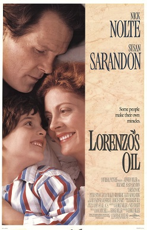

Módulo 1 . Aula 2
Barreiras à livre circulação do
Módulo 1 . Aula 2
Barreiras à livre circulação do
conhecimento e as expectativas em relação à Ciência Aberta
 Objetivos da aula
Objetivos da aula
Nesta aula iremos apresentar os obstáculos que a Ciência Aberta pretende eliminar. Ao final, você será capaz de:
- Identificar principais barreiras à livre circulação do conhecimento: econômica, editorial, jurídica e técnica.
- Conhecer definições de Ciência Aberta.
- Identificar os principais interesses e expectativas sobre a Ciência Aberta.
- Conhecer propostas para melhorar a comunicação científica.
A convergência em torno da Ciência Aberta
Atualmente, diversos atores que compõem o sistema de Ciência, Tecnologia e Inovação parecem concordar com a proposta, quase imperativa, de “abertura” da ciência. Esta insólita coincidência é um claro indício da ambiguidade desta expressão, pois por detrás do aparente consenso, há distintos pressupostos, interesses e implicações. Trata-se então de questionar:
- Pode a Ciência Aberta ter o mesmo significado para gestores públicos de política científica, financiadores privados de pesquisa, editores científicos, pesquisadores e sociedade? No que as visões desses atores coincidem? No que eles divergem?
- Em que direção cada um deles pretende conduzir a Ciência Aberta? Quais são as suas motivações?
- E, sobretudo, quais são as consequências dos possíveis rumos que ela irá tomar no Brasil?
Vale lembrar que esses conjuntos de inovações emergem de projetos “alternativos”, encampados inicialmente por pequenos grupos de pesquisadores que buscavam melhorar as condições de fazer ciência pela ampliação da circulação do conhecimento científico. Hoje, a Ciência Aberta já adquiriu outro status e se tornou um princípio orientador de políticas científicas de muitos países, destacando-se a aprovação da Recomendação da Unesco sobre Ciência Aberta em 2021. Este documento é o primeiro marco global que orienta os países a adotarem a cultura e a prática da Ciência Aberta e padrões comuns.
Dada a tendência crescente à institucionalização, é fundamental debatermos qual direção gostaríamos que a Ciência Aberta se orientasse no Brasil e, em especial, no campo da saúde pública. Algumas perguntas que podem estimular um processo de reflexão são:
- Estamos todos de acordo com o significado da Ciência Aberta e suas implicações?
- Pode a Ciência Aberta proposta por países desenvolvidos ser simplesmente transplantada para o contexto nacional? Como seria uma perspectiva brasileira da Ciência Aberta?
- Podemos ser propositivos e criativos frente ao cenário internacional?
- É possível adotar seus princípios de maneira crítica e adequada às demandas e questões estratégicas para a sociedade brasileira?
Em busca de uma definição de Ciência Aberta
A Ciência Aberta é um aglomerado de movimentos que, em linhas gerais, pretende tornar a pesquisa científica acessível para todos. Até pouco tempo atrás, as tentativas de defini-la se limitavam a listar um conjunto de práticas orientadas pelo paradigma aberto, tais como:
Acesso Aberto
(Open access)
Dados abertos
(Open data)
Hardware aberto
(Open hardware)
Ciência cidadã
(Citizen science)
Recursos educacionais abertos
(Open Educational Resources)
Revisão por pares aberta
(Open peer review)
Cadernos abertos de laboratório
(Open notebooks)
Softwares e códigos-fonte
abertos
Segundo a Open Knowledge International, por exemplo:
“a Ciência Aberta significa muitas coisas, mas principalmente que o conhecimento científico deve ser livre para as pessoas usarem, reutilizarem e distribuírem sem restrições legais, tecnológicas ou sociais”
(OKI, s.d.)
Esta concepção deriva da open definition que afirma que “o conhecimento é aberto se qualquer pessoa é livre para acessar, usar, modificar e redistribuir estando sujeito, no máximo, às medidas que preservem a autoria e a abertura”.
Mais recentemente, a Recomendação sobre Ciência Aberta da Unesco (2022) definiu este movimento como:
"[...] um construto inclusivo que combina vários movimentos e práticas que têm o objetivo de disponibilizar abertamente conhecimento científico multilíngue, torná-lo acessível e reutilizável para todos, aumentar as colaborações científicas e o compartilhamento de informações para o benefício da ciência e da sociedade, e abrir os processos de criação, avaliação e comunicação do conhecimento científico a atores da sociedade, além da comunidade científica tradicional. Abrange todas as disciplinas científicas e todos os aspectos das práticas acadêmicas, incluindo ciências básicas e aplicadas, ciências naturais, sociais e humanas, e se baseia nos seguintes pilares-chave: conhecimento científico aberto, infraestrutura científica aberta, comunicação científica, envolvimento aberto dos atores sociais e diálogo aberto com outros sistemas de conhecimento."
UNESCO, 2022
Barreiras que a Ciência Aberta pretende eliminar
Diversas inovações propostas pela Ciência Aberta afirmam aspirar a “livre circulação do conhecimento científico” e mobilizam a noção de “abertura” para contrapor, em diferentes graus e combinações, a obstáculos artificiais que impedem a sua difusão e avanço. Abrir pode significar eliminar barreiras. Especialmente no campo da comunicação científica, essas barreiras são de natureza:
A cobrança de assinaturas para acessar o conteúdo de revistas científicas criaram uma barreira financeira (paywall) que corrói orçamentos de instituições de pesquisa, especialmente suas bibliotecas, impedindo o amplo acesso ao conhecimento e, em última instância, inviabilizando a realização de pesquisas.
Esse cenário desolador ficou conhecido como “crise dos periódicos” e fomentou, lá pelos anos 2000, o movimento pelo Acesso Aberto em seu objetivo de “retomar a velha tradição” de fazer circular o conhecimento entre os “pares”. Segundo a Iniciativa do Acesso Aberto de Budapeste (2000), a “antiga tradição” de pesquisadores de publicar o resultado de pesquisa sem exigência de remuneração (em nome da transparência e democratização do conhecimento), somada a então incipiente Internet, poderia desmontar barreiras, especialmente a econômica, do acesso à literatura científica.
Aqui, o “aberto” se refere à disponibilidade gratuita na internet de produção científica, especialmente artigos publicados em revistas com revisão por pares e preprints, de forma que qualquer pessoa possa ler, baixar, copiar, distribuir, imprimir, buscar ou usar a literatura para qualquer propósito legal. As únicas restrições possíveis se referem à reprodução e à distribuição, permitindo que o autor garanta a integridade da obra e o seu direito de ser propriamente reconhecido e citado.
Recentemente, a reinvenção das estratégias de editoras comerciais com a cobrança de taxas de publicação de artigos (Article Processing Charges ou simplesmente APC) como condição para viabilizar que os artigos sejam disponibilizados em Acesso Aberto, reaqueceu debates sobre a barreira econômica. Os APCs são taxas caras para o orçamento da maioria das instituições de pesquisa e podem variar entre U$2 mil a U$11 mil em periódicos do grupo Nature.
Segundo o levantamento realizado por Kowaltowski, Arruda, Nussenzveig, Silbemar, (2023), os descontos (waivers) oferecidos pelas editoras são muito restritos ou inacessíveis a pesquisadores de países de renda média, como o Brasil. Contraditoriamente, esta apropriação do argumento do Acesso Aberto agrega um novo dificultador, pois a publicação de um artigo científico passa a depender da disponibilidade de recursos consideráveis em orçamentos cada vez mais reduzidos.
Vale destacar que as barreiras econômicas para a circulação do conhecimento foram pioneiramente tratadas pelo movimento do Acesso Aberto. No entanto, esse tipo de obstáculo segue e outras práticas da Ciência Aberta, como hardware e software abertos por exemplo, buscam superar.
A comunicação do conhecimento científico se dá majoritariamente através da publicação de artigos científicos em revistas que realizam o processo de revisão por pares às cegas. Ou seja, o exame dos manuscritos é realizado de forma que os autores desconhecem a identidade dos revisores e vice-versa.
No âmbito editorial, a crítica fundamental da Ciência Aberta é a intermediação da comunicação do conhecimento por um pequeno conjunto de atores (editores, autores e avaliadores anônimos e, geralmente, voluntários) que atuam como gatekeepers da informação e definem temas prioritários, formatos, critérios de cientificidade e qualidade. Enfim, o que é publicável (ou não) em revistas científicas. A questão aqui é o volume de conhecimento relevante que permanece oculto (não comunicado) por não atender às expectativas e aos parâmetros das editoras. Além disso, critica-se a falta de transparência dos processos avaliativos, cujos debates são de conhecimento apenas dos poucos envolvidos.
Alternativamente, a Ciência Aberta vem impulsionando a adoção da revisão aberta por pares (em seus diferentes formatos) e de preprints que podem ampliar substancialmente o número de avaliadores que participam do processo de avaliação. Acredita-se no grande potencial de promover debates mais transparentes e qualificados entre autores e revisores - uma função potencialmente ampliada a todos os interessados, não mais limitada a um par de especialistas.
A partir de um entendimento mais amplo de comunicação científica, há também a proposta de cadernos abertos de laboratório como instrumento para reduzir o papel de intermediação da comunicação do conhecimento por um pequeno conjunto de atores.
Para mais informações sobre preprints, veja a aula 4 do módulo 3 – Acesso Aberto
O uso abusivo do Direito Autoral pelas indústrias culturais e criativas, incluindo as de editoração científica, é considerado prejudicial para diversos campos da atividade humana na medida em que se cria uma “escassez artificial” de bens intelectuais, dificultando a circulação de informação relevante.
Se, por um lado, os Direitos Autorais protegem a Propriedade Intelectual, operando como meio de atribuição de exclusividade temporária, por outro lado, não deve se sobrepor a direitos fundamentais como educação, acesso à informação e conhecimento, desenvolvimento científico etc.
Este difícil equilíbrio é, atualmente, um campo de batalha feroz entre setores da economia que pretendem manter seus modelos de negócios e as novas dinâmicas sociais que promovem o crescimento exponencial de “cópias não autorizadas”. Em contraposição a uma crescente “cultura de permissão”, alguns ativistas elaboraram a noção de “cultura livre” (LESSIG, 2004, p. 28) para advogar a favor de “culturas que deixam uma grande parcela de si aberta para outros poderem trabalhar em cima”.
O Menino da Internet: A História de Aaron Swartz
(The Internet's Own Boy: The Story of Aaron Swartz)
Lançado em 2014, o filme narra a história de Aaron Swartz (1986-2013), um jovem programador, escritor e ativista norte-americano que acreditava na mudança radical do mundo através da internet e da computação. Em um determinado momento, Aaron utilizou a rede do Massachusetts Institute of Technology (MIT) para realizar o download massivo de milhões de artigos acadêmicos da biblioteca virtual JSTOR. Em resposta, o Ministério Público dos Estados Unidos iniciou um processo criminal contra Aaron, que terminou por levá-lo ao suicídio. O filme inclui entrevistas com sua família e amigos, explorando as questões de acesso à informação e as liberdades civis que guiaram a sua atuação.Veja o trailer
Fonte:Wikipedia
Compartilhar não é crime
Conheça o caso de Diego Gomez, um estudante colombiano que durante seu mestrado em conservação foi processado por compartilhar uma tese sobre salamandras na plataforma Scribd. O seu objetivo era facilitar o acesso a um trabalho que considerou relevante com seus amigos de faculdade, mas esta atitude se tornou objeto de um processo judicial e da campanha “Compartilhar não é delito” pelo direito do uso justo (fair use). Escute o podcast (em espanhol):
A adoção de formatos abertos é considerada mais adequada para viabilizar a circulação da informação porque favorece a preservação de documentos a longo prazo e a interoperabilidade entre sistemas, além de evitar a dependência de fornecedores que monopolizam um formato.
Esta situação é especialmente sensível pelo enorme volume de dados digitais acumulados nas instituições de pesquisa e ao seu potencial da mineração de texto e de dados para identificar correlações, padrões e tendências e subsidiar previsões e a tomada de decisão.
Mas vc sabe qual a diferença entre formatos abertos e fechados? Observe os cards comparativos a seguir.
É um formato cuja especificação técnica, usada para a descrição e armazenamento de dados digitais, está em domínio público e, portanto, sua adoção está livre de restrições legais. Ao abrir as especificidades técnicas, os formatos abertos podem ser adotados por qualquer sistema sem demandar pagamento ou estar sujeito à licença de uso restrito. Um exemplo é o Open Document Format for Office Applications (ODF), usado em textos, folhas de cálculo, bases de dados, desenhos e apresentações.
Órgãos públicos tendem a adotar formatos abertos porque precisam garantir que seus arquivos se mantenham utilizáveis a longo prazo.
É um formato cuja especificação técnica é definida e controlada por uma organização ou indivíduo. O seu esquema de codificação é privado e elaborado para operar adequadamente em softwares ou hardwares específicos.
O formato proprietário estabelece uma relação de dependência entre os usuários e fornecedores, pois os arquivos podem ser ilegíveis em outros sistemas ou descontinuados com o passar do tempo. Além disso, a interoperabilidade com outros sistemas ou softwares pode ser reduzida ou nula.
Uma Ciência Aberta, várias expectativas
![Ilustração de um livro aberto. Na página da esquerda, há linhas horizontais que representam texto. Abaixo dessas linhas, aparece o desenho de uma lupa. Dentro da lente da lupa, há um pequeno gráfico com três pontos coloridos (amarelo, laranja e azul) conectados por uma linha, sugerindo análise de dados ou pesquisa.Na página da direita, há a ilustração de um retrato genérico de uma pessoa, sem detalhes faciais, vestindo camisa social e gravata. Abaixo da imagem, também há várias linhas horizontais que simbolizam texto, como se fosse um perfil ou biografia.](../media/modulo1/aula2-img2.jpg "Fonte: Campus Virtual Fiocruz")
Conforme comentamos anteriormente, diversos atores que compõem o sistema de Ciência, Tecnologia e Inovação convergem a favor da proposta de uma Ciência Aberta, mas seus interesses e expectativas não necessariamente são os mesmos. De modo geral, o primeiro argumento mobilizado é o de promover o avanço do conhecimento e, para tal, a principal estratégia é aprimorar a comunicação científica.
Ou seja, a maneira como comunicamos, como tornamos comum, o conhecimento produzido por pesquisadores. Esta motivação é especialmente importante para aqueles que trabalham diretamente na atividade de pesquisa na medida em que informação e dados de pesquisa relevantes são a matéria-prima para produzir conhecimento novo. Por isso, muitos atores do sistema de Ciência, Tecnologia e Inovação propõem inovações para melhorar a qualidade e a quantidade de informação relevante disponível.
Vejamos a seguir os principais interesses e expectativas sobre a Ciência Aberta:
Acessar o conhecimento científico é um direito
Entre os interessados em avançar com a discussão da Ciência Aberta é muito comum indicar como uma contradição o fato do Estado ser o principal financiador da atividade de pesquisa, mas quando os resultados finalmente se estabelecem, é necessário pagar assinaturas para acessá-los através de publicações e serviços de editoras comerciais.
Na mesma linha de raciocínio, outro contrassenso é o volume reduzido de leitores que têm acesso a esse tipo de conteúdo.
Ouça o áudio a seguir e entenda mais sobre o direito ao acesso e ao conhecimento científico.
Melhorar o processo de comunicação científica
São diversas críticas sobre o modo dominante da comunicação científica, baseada na publicação de artigos em revistas científicas após a revisão às cegas por pares. Segundo os historiadores da ciência Steven Shapin e Simon Shaper (1985), essa forma de comunicar o “conhecimento novo” remonta aos ensaios experimentais elaborados por Robert Boyle na aurora da Ciência Moderna (séc XVII). Os relatos seriam uma das três estratégias (ou tecnologias) mobilizadas pelo químico irlandês para consolidar o programa experimental, até então inédito, como “a base do conhecimento apropriado” (the foundation of proper knowledge) de tal forma que o confundimos até hoje como sinônimo da própria ciência.
No contexto da Ciência Aberta, critica-se o que Latour (2011) chama de “modelo de difusão” e que se caracteriza pela apresentação dos resultados de pesquisa através de uma narrativa na qual o autor modula suas afirmações para persuadir os leitores sobre a “descoberta” de um fato científico, pretendendo produzir um efeito de verdade.
O modelo de difusão comunica uma “ciência pronta” que não privilegiaria a controvérsia e o debate público.
Na contramão da estratégia de “convencer leitores” sobre a construção de um fato científico, diversas inovações propostas no âmbito da Ciência Aberta se aproximam do modelo de translação (LATOUR, 2011), rejeitando as "versões finais e acabadas" da “ciência pronta” e renunciando à pretensão de controle da narrativa sobre a construção do fato científico. Nessa perspectiva, a abertura vai além do acesso à literatura que comunica a “ciência pronta”, mas fomenta o compartilhamento precoce de informação relevante. Isto inclui o que está “em desenvolvimento” ou “inacabado" na medida em que as lacunas são consideradas a verdadeira oportunidade para a produção de conhecimento e colaboração entre pesquisadores.
Duas críticas importantes ao sistema vigente de comunicação científica são:
Se o papel da revisão por pares na comunicação científica é incontestável, a modalidade “duplo cego” é considerada limitada e precária. Nela, um par de avaliadores trabalha de maneira voluntária, e em curto espaço de tempo, e apresenta pareceres sobre um manuscrito que pode apresentar lacunas importantes de informação. No campo experimental, agrega-se a impossibilidade de reproduzir experimentos relatados.
Estas condições insatisfatórias favoreceriam a difusão de informação incompleta, de qualidade duvidosa, fraudes e plágios que impactam negativamente no desenvolvimento científico. Uma vez publicadas tendem a ser consideradas “fontes confiáveis”, são pouco questionadas, e criam um efeito em cascata através das citações subsequentes.
Já comentamos anteriormente que as editoras definem critérios que determinam o que é publicável, descartando grandes volumes de informação potencialmente relevante. No campo experimental por exemplo, a preferência em publicar experimentos “bem-sucedidos” limita drasticamente o que é publicado. Segundo a estimativa de Jean-Claude Bradley (2006), proponente dos cadernos abertos de laboratório, 87% da sua produção científica não ultrapassaria os muros de seu laboratório por serem experimentos “fracassados”, portanto, desprezíveis para publicação.
As questões de fundo são: Quem melhor do que a própria comunidade científica para definir o que é relevante? O quanto podemos aprender e avançar a partir dos “erros” em ciência que não são compartilhados?
Vejamos a seguir algumas propostas para remodelar a comunicação científica.
Scholarly Skywriting, Stevan Harnard (1990)
Nos primórdios da internet, Harnard vislumbrou que as interações entre pesquisadores – conversas informais, apresentação em conferências, publicação de preprints e de relatórios - seriam potencializadas pelos meios digitais. Para o autor, essas trocas são uma espécie de revisão por pares que deveriam ser registradas eletronicamente como contribuições nos processos de produção e de validação do conhecimento.
Preprint, Paul Ginsparg (1991)
Neste formato de comunicação científica, o manuscrito de um artigo científico é depositado pelo autor em uma plataforma on-line após breve avaliação do editor. Uma vez publicado, o preprint fica disponível para um processo de revisão aberta por pares que registram comentários e sugestões para a melhoria do trabalho. Para mais informações sobre preprints, veja a aula 4 do módulo 3 – Acesso Aberto.
Caderno aberto de laboratório, Jean-Claude Bradley (2006)
Buscando enfrentar as falhas que considera estruturais na comunicação científica, o professor e pesquisador de Química da Universidade de Drexell (EUA) propõe uma “ciência do caderno aberto” que privilegia o registro detalhado das etapas de um experimento em caderno aberto de laboratório em detrimento da “obsessão pela construção de um fato científico”.
A abertura pretende estimular a excelência ao longo do processo, ampliar as possibilidades de intercâmbio qualitativo entre cientistas e tornar o conhecimento permanentemente acessível e atualizável por uma comunidade de pares. Da forma como foi concebido, o caderno aberto é o elemento central de um “ecossistema de colaboração aberta” que estabelece uma continuidade entre os Dados Abertos e o Acesso Aberto à produção científica.
Publicações líquidas de Casati, Giunchiglia e Marchese (2007)
Até hoje, o artigo científico é uma espécie de “publicação sólida” que “grava em pedra”, “cristaliza no tempo e no espaço” um conhecimento científico, tornando-o permanente e não atualizável. Associado à cultura do “publicar ou perecer”, este formato proliferaria artigos incrementais que pouco adicionam a resultados já publicados, desperdiçando recursos na sua escritura, avaliação, editoração, publicação.
Na contramão, as “publicações líquidas” se inspiram no desenvolvimento ágil de software Open Source e seriam atualizáveis e evoluiriam de maneira contínua, registrando as múltiplas versões de uma pesquisa, assignando tanto o crédito quanto a responsabilidade dos colaboradores por suas contribuições e incrementando as oportunidades de revisão.
Favorecer a reprodutibilidade em pesquisa
Apesar de não haver uma definição única para o termo reprodutibilidade, ele se refere à expectativa de que um pesquisador, usando os mesmos métodos descritos por outro cientista, obterá resultados semelhantes.
A chamada “crise de reprodutibilidade” é um dos temas fundamentais do debate atual sobre qualidade em ciência e a dificuldade ou impossibilidade de reproduzir resultados de pesquisa em diversos campos do conhecimento. Em maio de 2016, uma enquete realizada pela revista Nature com cerca de 1,5 mil pesquisadores revelou:
Mais de 70% dos respondentes já falharam ao tentar reproduzir experimentos de outros pesquisadores.
Mais da metade dos participantes afirmou não ter conseguido reproduzir seus próprios experimentos (BAKER, 2016).
Vamos conhecer as principais causas da baixa reprodutibilidade? Ouçam a seguir:
A Iniciativa Brasileira de Reprodutibilidade pretende estimar a reprodutibilidade da ciência biomédica brasileira, mobilizando laboratórios brasileiros em tentativas de replicar experimentos individuais publicados em revistas científicas. Seu objetivo é subsidiar a reflexão sobre práticas individuais e coletivas e “ajudar a colocar o Brasil na vanguarda do desenvolvimento de uma ciência mais confiável a nível mundial”. (INICIATIVA BRASILEIRA DE REPRODUTIBILIDADE, 2018)
Aumentar a competitividade de um país
Diversas políticas nacionais, programas e planos de ação que adotam a Ciência Aberta destacam a relação entre o desenvolvimento científico e o aumento da competitividade e de oportunidades para os diversos setores da economia. No âmbito europeu, o precursor relatório “Open Science, Open Innovation, Openness to the World - a vision for Europe” (EUROPEAN COMMISSION, 2016, p. 52) assinalava que a abordagem aberta torna a “ciência melhor” em três perspectivas:
pan_tool_alt CliqueToque e arraste para passar os cartões
Entre os benefícios para a sociedade, a União Europeia entende que:
"Ciência Aberta é uma estratégia para fortalecer a excelência científica e o caráter inovador do bloco na medida em que a cooperação internacional facilita o acesso ao conhecimento novo, aos melhores talentos globais e melhores recursos onde quer que estejam localizados. Pretende-se aumentar a competitividade, criar oportunidades para as indústrias de alta tecnologia e acessar mercados emergentes, considerando a importância crescente dos dados na economia global. O relatório europeu também cita o potencial da Ciência Aberta no enfrentamento de problemas societais complexos como a mudança climática, a escassez de recursos ou emergências sanitárias"
(EUROPEAN COMMISSION, 2016, p. 64)
Aumentar o retorno do investimento
Este argumento é especialmente mobilizado pelas instituições privadas de caráter filantrópico que financiam a pesquisa científica. Suas políticas mandatórias de publicação de resultados de pesquisa em Acesso Aberto e a exigência da elaboração de um Plano de Gestão de Dados para seus financiados convergem, em última instância, para a ideia de aumentar o retorno do investimento (return of investment - ROIem inglês) em ciência.
Segundo o Grupo de Financiadores em Pesquisa Aberta (Open Research Funders Group em inglês), que reúne instituições como a Fundação Bill e Melinda Gates e a Wellcome Trust, a abertura de resultados de pesquisa gera benefícios para a sociedade como acelerar o ritmo de descobertas, reduzir as lacunas de informação, incentivar a inovação e promover a reprodutibilidade.
Ampliar a participação da sociedade
Por fim, mas não menos importante, há argumentos favoráveis à Ciência Aberta oriundas da sociedade em geral, especialmente da sociedade civil organizada que demanda acesso ao conhecimento científico para subsidiar sua participação política e ativismo.
O acesso ao conhecimento científico como um direito humano, sendo categórica a sua abertura, sobretudo, quando a pesquisa é financiada com recursos públicos.
Além disso, também há demandas para uma maior compreensibilidade dos resultados de pesquisa pelos chamados leigos, pois a apropriação do conhecimento depende de informação relevante e clara.
Neste sentido, as propostas vão além do acesso aberto à literatura ou a dados de pesquisa e postulam novas formas de produção de conhecimento “entre todos” através de metodologias participativas que valorizem o conhecimento, a experiência e os interesses dos cidadãos (LAFUENTE, ESTALELLA, 2015). Os projetos da chamada Ciência Cidadã se caracterizam pela participação de “não especialistas” na produção de conhecimento em níveis variados de “participação” que vão da contribuição, passam pela colaboração e chegam à cocriação.
Abordagens da Ciência Cidadã:
|
|
Contribuição |
Colaboração |
Cocriação |
|---|---|---|---|
|
Definir questão/tema |
check | ||
|
Reunir informação |
check | ||
|
Desenvolver explicação |
check | check | |
|
Elaborar métodos de coleta de dados |
check | check | |
|
Coletar amostras |
check | check | check |
|
Analisar amostras |
check | check | check |
|
Interpretar dados/formular conclusões |
check | check | |
|
Disseminar conclusões |
check | ||
|
Debater resultados / Novas questões |
check |
Fonte: Adaptado e traduzido de PHILLIPS, FERGUSON, MINARCHEK, PORTICELLA, BONNEY, 2014, p. 2. (Tradução nossa).
No nível mais avançado de participação, os projetos de cocriação demandam que a ciência - sua agenda, conceitos, métodos e prioridades - se abra ao escrutínio e participação de grupos com perspectivas distintas das elites científicas. São ações que buscam promover a participação direta daqueles que são afetados por políticas elaboradas em seu nome, mas produzida por terceiros - uma exigência claramente expressa no slogan "Nada sobre nós sem nós" (Nothing about us without us) criado por movimentos de pessoas com deficiências (disability movements) nos Estados Unidos na década de 1970.
No campo da saúde, muitas iniciativas de cocriação são lideradas por pacientes crônicos que renunciam ao status de “leigo” para se tornar “especialistas em experiência” (CALLON, RABEHARISOA, 2003) e “coprodutores” de suas doenças. A Association Française contre les Myopathies(AFM), por exemplo, não subordina a experiência dos pacientes ao conhecimento dos especialistas, pois a colaboração não se limita a cessão de informações sobre seu estado clínico, mas inclui decisões sobre os rumos da pesquisa.
A decisão conjunta em investir em uma abordagem genética transformou doenças órfãs em um tema com substancial apelo popular na França. A opinião pública, estimulada por eventos como o Teleton, reconheceu que essa linha de pesquisa não beneficia apenas um grupo minoritário, mas tem potencial de beneficiar a toda a população.

As tensões, conflitos e colaborações entre pesquisadores e pacientes são abordados no filme “O óleo de Lorenzo” (1992) que narra a história real do menino Lorenzo Odone que começa a apresentar sintomas de uma doença rara chamada adrenoleucodistrofia (ALD) e os esforços de seus pais, Augusto e Michaela, para descobrir um possível tratamento para a criança.
Como citar esta aula:
CLINIO, Anne. Barreiras a livre circulação do conhecimento e as expectativas em relação a Ciência Aberta. In: JORGE, Vanessa; CLINIO, Anne (Coord.). Programa de Formação Modular em Ciência Aberta. Módulo, 1. Fundamentos da Ciência Aberta. Aula 2 (2a edição) Rio de Janeiro: Fiocruz, 14 ago. 2025 Disponível em: Disponível em: https://mooc.campusvirtual.fiocruz.br/rea/ciencia-aberta/modulo1/aula2.html. Acesso em: 14 nov.